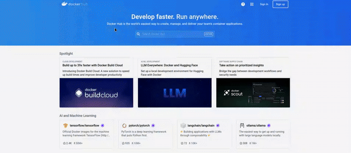
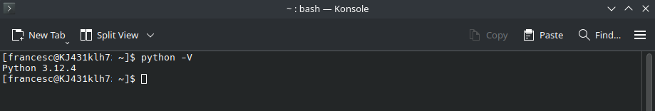
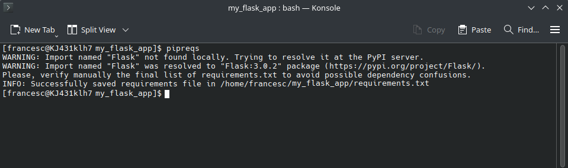
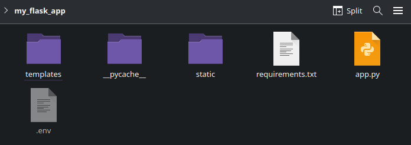
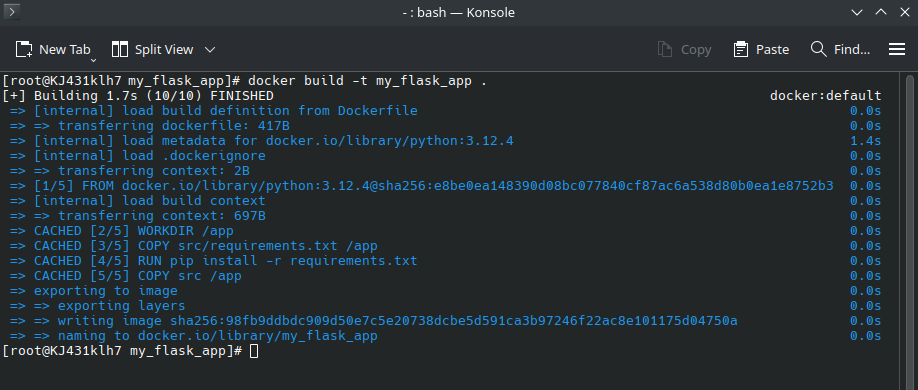
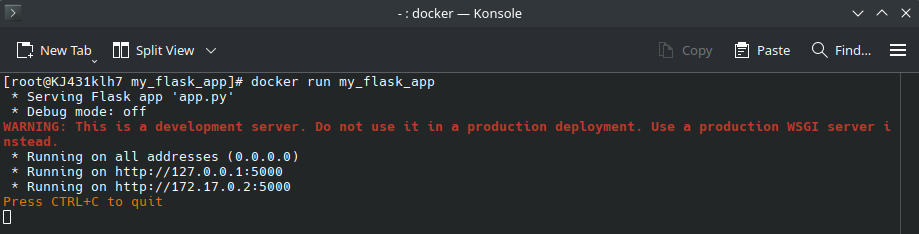
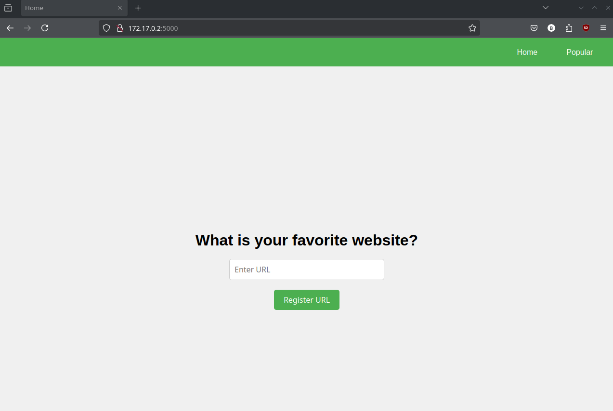

{kind=link}
pip install somepackageIn the previous posts of the data-driven web applications basics, we incrementally built a first and functional version of our application: a web application that allows users to submit their favorite websites and view the most popular sites based on these submissions.
In the first post, we focused on setting up the basic structure of our web application using Flask. This initial version of the application presented users with a one-page application containing a text input that allowed them to submit their favorite websites. However, at that stage, while we provided users with a confirmation message indicating their input had been received, we did not implement any mechanism to store the submitted data.
For this reason, in the second post, we addressed this limitation by integrating a database into our application. This upgrade allowed us to store user-submitted URLs persistently. As a result, we introduced a new page that displayed the most popular websites based on user submissions.
With these updates, our application is now functional, allowing users to register their favorite websites and view a ranking of the most popular sites based on user input. At this point, we may share the application with other developers for testing and further enhancement, or even consider deployment. This raises an important question: how can we ensure the application runs consistently across different environments?
Deploying an application in various environments—such as development, testing, and production—often reveals issues related to differences in operating systems, dependencies, and configurations. These inconsistencies can be time-consuming because each environment may require separate installation and configuration of all necessary dependencies and requirements to ensure the application functions correctly. Moreover, these discrepancies may lead to bugs or performance issues that are difficult to diagnose and resolve.
Containerization
To address these challenges, one effective solution is containerization. Containerization involves packaging an application along with all its necessary components and requirements into a single, self-contained unit called a container image.
A container image is a standalone, executable package of software that includes everything needed to run an application, such as the application code, runtime environment, system tools, system libraries and settings. Because of that container images are highly portable, enabling developers to create applications that can be “built once and run anywhere.”
When a container image is ran, it transforms into a running instance called a container. Containers run independently of other software on the host system by including all necessary dependencies, configurations, and libraries within themselves. This ensures that the application operates consistently across different environments.
Containerization simplifies deployment across various environments—such as development, testing, and production—by eliminating the need to install dependencies or verify software compatibility. It ensures consistent application behavior regardless of the deployment environment, reducing the risk of discrepancies between different environments.
Additionally, containers enhance scalability, as they can be easily replicated and managed, facilitating efficient scaling in response to varying user demands. Containers are also instrumental in supporting microservices architectures. By isolating each service within its own container, developers can build, deploy, and maintain complex applications more effectively. This modularity allows for easier management of different components, enabling continuous integration and delivery while simplifying troubleshooting and updates.
Therefore, containers provide a robust solution for modern software development and deployment, offering consistency, portability, scalability, and flexibility. These benefits contribute to faster delivery of software with fewer errors and greater reliability.
Containers vs. Virtual Machines
Containers may sound similar to virtual machines (VMs), but there are key differences between the two. While VMs virtualize at the hardware level, creating full instances of an operating system that run on top of a hypervisor, containers virtualize at the operating system level by sharing the host’s kernel. This means containers only package the application and its dependencies, without the need to include an entire OS. Because of this, containers are significantly lighter, faster to start and stop, and more efficient in terms of resource usage compared to VMs. These advantages allow for greater density—more containers can run on a single host compared to VMs—making containers a more agile and scalable solution for modern application deployment.
Docker
Docker has become the most widely adopted platform for creating, deploying, and managing containers thanks to its ease of use, extensive ecosystem, and strong community support.
To start creating and using Docker containers, installation of the the Docker Engine is required. Detailed installation instructions for various operating systems can be found at the Docker Engine Installation Guide.
Moreover, Windows users also need to install the Windows Subsystem for Linux (WSL), which serves a compatibility layer allowing to run a Linux distribution directly on Windows. This is necessary because Docker relies on Linux-based technologies to function properly, and WSL provides the required Linux environment on Windows. You can install WSL by following the instructions here: Install Windows Subsystem for Linux. Furthermore, setting up WSL enables Docker to build and run Linux-based containers on a Windows machine as it provides a Linux kernel environment.
Once Docker is installed and configured, we are ready to start building and using Docker containers. This process generally involves three key stages: creating a Dockerfile, building a container image from this Dockerfile, and running that image as a container.
The first step in containerization with Docker is creating a Dockerfile. A Dockerfile is a plain text file that contains a series of instructions for Docker to follow in order to build a container image. This file outlines everything necessary to construct and run your application, including which files to include in the image, which libraries to install, the configuration settings to apply, and the commands needed to launch the application.
Once the Dockerfile is ready, we can use it to build a container image. When building an image, Docker reads the instructions in the Dockerfile and assembles the image. A container image is an executable package that includes everything needed to run our application.
These images can be run, becoming containers, i.e., an isolated environment that runs the application along with all its requirements. Figure 1 visually summarizes the containerization process that we just described.
With this foundation in place, we can move on to the practical task of containerizing our application using Docker.
Creating a Dockerfile
As we have just seen, the first step step to create a container image is to generate a Dockerfile. This file contains a set of instructions that define how the container image should be built and configured. It specifies the base image to use, the software and dependencies to install, and any additional configuration required for your application.
In essence, the Dockerfile serves as a blueprint for creating a container image, detailing a sequence of instructions that guide the Docker engine through the image-building process. Although there are numerous instructions available, some are fundamental to the process and are widely used in Dockerfiles. The following are among the most essential:
FROM: Defines the base image that the container will be built on. Docker images are often created by extending an existing image that includes the necessary components for your software. For example, if we are containerizing a Python application, the container will need a working version of Python, so the application can run. In this case, we can start with a base image that already has Python installed and then add the application on top of it.
WORKDIR: Sets the working directory inside the container where all subsequent commands will be executed. It ensures that any following instructions operate within this specified directory. If the specified working directory does not exist, it will be automatically created.
COPY: Specifies which files from your local system should be copied into the container’s working directory. This typically includes essential elements like application code, configuration files, images, and other assets necessary for the containerized application to function.
RUN: Executes commands during the image build process. These commands might include installing software, setting up dependencies, or configuring the environment to prepare it for running the application.
CMD: Defines the default command that will run when the container starts. This command could involve launching an application server, running a script, or starting a service. Unlike
RUN, which is used during the image-building process,CMDdetermines what happens when the container image is executed.ENV: Sets environment variables that will be available for all subsequent instructions. In addition, these environment variables will persist when a container is run from the resulting image.
EXPOSE: Indicates the ports that the containerized application will use. This instruction does not automatically publish the ports to the host; it merely documents which ports the container is intended to listen on for connections.
These instructions are sufficient for creating our Dockerfile. We can now move forward by specifying each of these instructions for our application, completing the Dockerfile and enabling us to build the container image for our application.
1. FROM
When creating a container image, it’s typically more efficient to start with a pre-existing base image that already includes essential components, rather than building everything from scratch. A base image is a pre-built container image that comes with necessary software, libraries, and tools, providing a solid foundation for your application. The FROM instruction in your Dockerfile specifies which base image to use, establishing the starting point for a container image.
Docker uses a layered architecture to build images. Each layer represents a set of changes or additions to the image and is built on top of the previous layer. By choosing a base image, you create the initial layer of your Docker image. Subsequent instructions in your Dockerfile—such as installing additional software, copying files, or setting environment variables—add new layers on top of this base image. In the next sections, we will take a closer look at how this layered architecture works.
Container isolation
The primary advantage of using containers is their ability to ensure consistent application performance across different systems. Containers achieve this by providing a fully isolated environment for your application, separate from the host system. This isolation guarantees that your application will run the same way on any device with a compatible kernel, since all the necessary components are contained within the container itself. However, this means that the container must incorporate all the components required for your application to function properly.
Base images can be chosen from different sources, including images stored locally on your system from previous projects, as well as external repositories such as Docker Hub. Docker Hub is a container registry, hosting a vast collection of images contributed by numerous developers and organizations. It provides an extensive library of pre-built images that can be directly pulled and utilized.
For our specific needs, given that the application we have developed in earlier posts is written in Python, we can start by selecting a base image that already includes Python, which we will retrieve from Docker Hub.
To do so, we will navigate to Docker Hub, where we will search for “Python”. This search will return a list of container images that include Python. The top result is the official Python image. We can click on this image to access detailed information about it. Figure 2 illustrates how to navigate to this image on Docker Hub.

Now that we are on the page for the official Python image, we can see several sections, such as “Simple Tags,” “Shared Tags,” and “Image Variants.” These sections indicate that there are different versions or variants of this Python image. Essentially, these variants include various versions of Python and may also come with additional tools or libraries.
To clarify further, let’s explore the “Simple Tags” section. As shown in Figure 3, all tags begin with a version number such as “3.13.0a5,” “3.13,” or “3.12.2.” This part of the tag specifies the version of Python included in that particular image variant.
Following the version number, separated by a hyphen, you will find terms like “bookworm,” “slim-bookworm,” “bullseye,” or “windowsservercore.” This part of the tag indicates the base operating system that influences the image’s environment.
For instance, “bookworm” is based on the Debian Bookworm operating system. The “slim-bookworm” variant, while also based on Debian Bookworm, is a lighter version, which means it excludes unnecessary components found in the non-slim “bookworm” variant.
However, it’s crucial to understand that the image itself does not include a complete operating system. Instead, the image incorporates libraries and dependencies from the specified base OS but does not contain its full kernel. The actual kernel used by the image is provided by the host system. Thus, while the image relies on components from the indicated base OS for its runtime environment, it operates using the host’s kernel for fundamental system functions.
To select the appropriate variant of the Python image for our base image, we need to first determine the Python version that our application was developed with and is currently using. Remember that the purpose of using containers is to encapsulate the application along with all its dependencies, ensuring that it runs smoothly and consistently within its own environment. Therefore, to ensure that our application behaves as expected in the container, we must use the same Python version that we used during development.
To identify the Python version, open a terminal and execute the command python --version or python -V. This command will display the exact Python version installed on your system, which is crucial for maintaining consistency. Figure 4 shows the output of this command, showing the specific version of Python in use.

As shown by the output of the previous commands, in my case, the Python version in use is 3.12.4. Therefore, we will choose a base image that matches this Python version to ensure consistency. For our Flask application, we do not require any additional components from the base image, such as specific operating system variants like “bookworm” or “bullseye.” These variants typically include extra libraries and tools that are unnecessary for a simple Flask app.
Including extra components, such as OS-specific libraries and tools, can substantially increase the size of the resulting image, resulting in a bulkier and less efficient deployment. Since our application only requires Python and no additional OS-specific elements, we should opt for a base image that excludes these unnecessary extras. Additionally, minimizing the inclusion of redundant components helps to reduce build time, and lower potential security vulnerabilities.
In the Dockerfile, we will specify the base image to include Python 3.12.4. To achieve this, we will use the image name from Docker Hub, which is python, followed by the tag for the desired version, 3.12.4. Tags are denoted using a colon (:), so the base image we will use is python:3.12.4. Therefore, our Dockerfile will start with the following instruction:
FROM python:3.12.4This FROM instruction tells Docker to first look for the python:3.12.4 image on our local machine. If the image is not found locally, Docker will search Docker Hub, pull the image, and use it as the base for our containerized application.
2. WORKDIR
After defining the base image in our Dockerfile, the next step is to set the working directory using the WORKDIR instruction. The working directory establishes the default location where subsequent instructions, such as RUN, CMD, and COPY, will be executed.
If the directory specified by the WORKDIR instruction does not already exist, Docker will automatically create it.
In our example, we will set the working directory to /app using the WORKDIR /app instruction. This means that all subsequent instructions will be run from within the /app directory. As a result, our Dockerfile will include the following lines:
FROM python:3.12.4
WORKDIR /app3. COPY
Having defined the working directory, we can proceed to copy all the required files needed to run our application. Specifically, we need to copy the folder containing our Flask application and all its associated files into this directory.
However, copying the folder alone won’t make the application functional right away. This is because while our container will have Python installed, it won’t include the additional libraries required by our application. For instance, our Flask application depends on libraries such as Flask itself.
To address this, we first need to create a requirements file, i.e. a file that specifies the libraries that must be installed for our application to run, allowing us to install these dependencies within the container.
Creating the Requirements File
In Python, a requirements file is a simple text file that lists the names and versions of all the libraries needed for an application or program, each on a separate line. The format for each line is library_name==library_version. The standard name for this file is requirements.txt, though we can technically use any name. Following this convention is recommended because it simplifies understanding and collaboration.
We can generate a requirements file in different ways. For instance, we can create it manually, or we can use tools that automate its creation. For instance, a common approach is to use the pipreqs library. This library checks the imports of a project and based on that automatically creates a requirements file.
To use pipreqs, we first need to install it via pip with the following command:
pip install pipreqsOnce we have installed pipreqs, we can navigate to our application’s directory and run the pipreqs command. This command scans the entire directory to identify all the libraries that our application uses, excluding those included by default in Python. It then generates a requirements.txt file in the same directory, listing these libraries along with their respective versions. Figure 5 illustrates the output of running this command.

An alternative approach to generate requirements files
An alternative approach to using pipreqs for generating a requirements.txt file involves using a Python virtual environment along with the pip freeze command.
Python virtual environments
A Python virtual environment is an isolated environment in which you can install Python packages independently from the global Python installation. It allows you to manage dependencies on a per-project basis, ensuring that each project has its own set of packages and versions without affecting other projects or the system-wide Python installation. This is particularly useful for avoiding conflicts between package versions and for maintaining consistent environments across different development setups.
You can create a virtual environment using the venv module by running the the following command on a terminal:
python -m venv myenvWhen you run this command, it will create a new directory named myenv (or the name you chose) in the current directory. This new directory will contain a copy of the Python interpreter and a local site-packages directory where you can install packages. It also includes scripts for activating the environment, allowing you to use isolated dependencies within that environment.
After creating the virtual environment, you activate it:
On Windows:
myenv\Scripts\activateOn macOS and Linux:
source myenv/bin/activateActivating the virtual environment ensures that any packages you install or any Python commands you run use the Python interpreter and libraries from within this environment, rather than the global Python installation. This helps maintain dependencies specific to your project and prevents potential conflicts.
Once the environment is activated, you should install the libraries required for the current project. You can do this using pip:
Using pip freeze
Once you have activated your virtual environment and installed the necessary packages for your project, you can use the pip freeze command to generate a requirements.txt file.
The pip freeze command outputs a list of all installed packages in the current environment along with their versions in the format package==version. This list represents the exact state of the environment and is useful for recreating the environment elsewhere. To save this list to a requirements.txt file, you would run the following command on the terminal you have activated your virtual environment:
pip freeze > requirements.txtThis command captures the list of all installed packages and their versions in the current environment and saves it to requirements.txt in the directory where you run the command.
Now, in the application folder, we can see a new file named requirements.txt, as shown in Figure 6.

If we open the requirements.txt file, we will see that it contains the following contents:
Flask==3.0.2
python-dotenv==1.0.1
psycopg==3.2.1We now have all the necessary files to containerize our application: the application code, along with the requirements file, which specifies the the Python libraries not bundled with the base Python installation required for our application.
However, before we proceed with specifying the COPY instructions in the Dockerfile to copy these files into the container image, it’s important to recall how Docker builds images. Docker images are constructed using a layered structure, where each instruction in the Dockerfile creates a new layer on top of the previous ones. This structure allows Docker to rebuild only the layers that have changed and any subsequent layers to these, while reusing previous layers. This optimization is intended to speed up the rebuild process.
Given this, it is advantageous to separate the application files from the requirements file. The application code is likely to change frequently, leading to multiple image rebuilds. In contrast, the required libraries typically remain stable and do not change as often. By separating these components, we avoid reinstalling the libraries during each rebuild in which our code has changed, as the layer containing the libraries remains unchanged.
To achieve this, we will first make a slight adjustment to our file structure. Specifically, we will move the application files into a folder named src, while leaving the Dockerfile and the requirements file outside of this folder. This separation helps us to clearly differentiate between the application code and the files used for containerization. The updated file structure will look as follows:
- my_flask_app/ (Main folder of the application)
|
|- Dockerfile (File specifying how to build the Docker image for our application)
|
|- requirements.txt (Python requirements file)
|
|- src/ (Folder containing the application code)
|
|- app.py (Main file for the Flask application)
|
|- .env (File to store environmental variables)
|
|- templates/ (Folder to store HTML templates)
| |
| |- base_template.html (HTML template for the base template)
| |
| |- index.html (HTML template for the main page)
| |
| |- navbar.html (HTML template for the navigation bar)
| |
| |- popular.html (HTML template for the top favorite websites page)
|
|- static/ (Folder to store static files such as CSS, JavaScript, images, etc.)
|
|- styles (Folder to store style sheets, such as CSS files)
|
|- base_template.css (CSS file to style the base template elements)
|
|- home.css (CSS file to style the main page)
|
|- navbar.css (CSS file to style the navigation)
|
|- popular.css (CSS file to style the top favorite websites page)With our file structure adjusted, we can proceed to copy these files into the container.
To achieve this, we use the COPY instruction in the Dockerfile. This instruction allows us to specify the source path and filename relative to the Dockerfile’s location, as well as the destination path within the container. In our setup, we will copy the requirements.txt file and the src directory into the /app directory inside the container, which serves as our working directory. As a result, our Dockerfile will look like this:
FROM python:3.12.4
WORKDIR /app
COPY requirements.txt /app
COPY src /app
Why the sequence of instructions matters in a Dockerfile
When working with Dockerfiles, the order of the instructions plays an important role. In this post, we present the various blocks of instructions in a somewhat organized manner, but it’s important not to be misled by this arrangement. The sequence we use here is designed to help us define instructions in a more structured way during this practical example. However, the actual order of instructions in a Dockerfile doesn’t necessarily follow this same sequence, and instructions may be repeated at different points in the file. This means that a Dockerfile doesn’t always have a strict linear structure—instructions can be interleaved as needed.
The order of instructions in a Dockerfile plays significant importance due to the way Docker images are constructed. Docker images are built in layers, with each instruction in the Dockerfile typically corresponding to a new layer. When the docker build command is executed, Docker attempts to reuse layers from previous builds to optimize the process.
If a layer has changed since the last build, that layer and all subsequent layers must be rebuilt. This is why the order of instructions matters: to minimize unnecessary rebuilding and redundancy, it’s beneficial to arrange the Dockerfile in a way that optimizes layer caching. For instance, placing the instructions for downloading and installing dependencies before copying the source code allows Docker to reuse the “dependencies” layer from the cache, even if changes are made to the source code later. For this reason, it is important to keep this in mind when creating Dockerfiles, as the proper ordering of instructions can significantly reduce build times in subsequent builds.
Figure 7 visually illustrates the concept of Docker image layering, helping to clarify how Docker builds images and why the order of instructions in a Dockerfile is so important.
{kind=link}
4. RUN
In the previous step, we created a requirements file for our application. This file lists all the libraries that our application needs to run correctly. During the Docker image build process, both the requirements file and the application’s code are copied into the Docker image. The purpose of the requirements file is to ensure that all necessary libraries are installed in the Docker image, so the application can function as intended.
To install these libraries, we can use the RUN instruction in the Dockerfile. This instruction allows us to execute commands during the build process of the image. Specifically, we run the command pip install -r requirements.txt to install all the dependencies specified in the requirements file.
Proper placement of this RUN instruction is essential due to Docker’s layered image structure. To optimize the build process, we should place the dependency installation steps before adding the application code. By placing the dependency installation steps before adding the application code, we ensure that Docker can cache the layer containing the installed libraries. As a result, if the application code changes but the dependencies remain the same, Docker can reuse the cached layer for the dependencies, which speeds up subsequent builds by avoiding redundant installations.
With these adjustments, our Dockerfile will now look like this:
FROM python:3.12.4
WORKDIR /app
COPY requirements.txt /app
RUN pip install -r requirements.txt
COPY src /app5. CMD
We have now defined all the necessary instructions in the Dockerfile to set up our application. This includes specifying the required dependencies such as Python and the necessary libraries, how to install them, and outlining how to copy the application files into the Docker image. Our Dockerfile is almost complete; however, we still need to specify how to run the application when the container starts.
Previously, we have run our Flask application using the flask run command. We will use the same command to start the application within the Docker container. However, because a Docker container operates in an isolated environment with its own network configuration, we must specify additional parameters to ensure the application is accessible from outside the container. Specifically, we need to set the host and port parameters in the flask run command:
-h 0.0.0.0: By default, Flask binds tolocalhost, which restricts access to only within the container. Setting the host to0.0.0.0instructs Flask to listen on all network interfaces within the container. This change makes the application accessible from outside the container, allowing it to be reached from any IP address that can connect to the Docker container.-p 5000: This parameter specifies the port number on which Flask will listen for incoming connections. Port 5000 is the default for Flask applications, but this can be adjusted if necessary. It ensures that Flask is listening on the appropriate port inside the container.
Therefore, the command to run the Flask application with the required parameters will be:
flask run -h 0.0.0.0 -p 5000We can execute this command every time the container is started by using the CMD instruction in our Dockerfile. Remember that the CMD instruction differs from the RUN instruction. The RUN instruction is used during the build process of the container image, whereas CMD specifies the command to run when the container is started.
To ensure clarity and proper execution within the container, it is a best practice to use the JSON array format for the CMD instruction in the Dockerfile. This format avoids potential issues with shell parsing and ensures that each part of the command is handled correctly. In this format, the command would be specified as: ["flask", "run", "-h", "0.0.0.0", "-p", "5000"].
Here is how the Dockerfile should look with the CMD instruction included:
FROM python:3.12.4
WORKDIR /app
COPY requirements.txt /app
RUN pip install -r requirements.txt
COPY src /app
CMD ["flask", "run", "-h", "0.0.0.0", "-p", "5000"]6. ENV
When we use the flask run command, we are assuming that Flask will correctly identify the main application file. However, within the container environment, this may not always be clear or correctly interpreted.
To resolve this issue, it’s important to explicitly specify the main Flask application file by defining an environment variable within the Docker container. In our case, the main file is app.py. We can achieve this by using the ENV instruction in the Dockerfile, which allows us to define environment variables in the format key=value. Specifically, we need to set the FLASK_APP environment variable to app.py. This can be done with the following instruction:
ENV FLASK_APP=app.pyIn addition, we need to set this instruction before the CMD instruction in our Dockerfile to ensure that the FLASK_APP variable is available when the flask run command is executed.
With this addition, our updated Dockerfile will look like this:
FROM python:3.12.4
WORKDIR /app
COPY requirements.txt /app
RUN pip install -r requirements.txt
COPY src /app
ENV FLASK_APP=app.py
CMD ["flask", "run", "-h", "0.0.0.0", "-p", "5000"]7. EXPOSE
To ensure that our Flask application running inside the Docker container can be accessed from outside the container, we need to make its network port available. Since our Flask application listens on port 5000, it is crucial to expose this port in the Docker container configuration. Exposing the port allows external applications and services to connect to our Flask application without encountering connectivity issues.
In Docker, the EXPOSE instruction is used to declare which ports the container will listen on at runtimeSince our Flask application listens on port 5000, we need to specify this port using the EXPOSE instruction.
By doing so, our updated Dockerfile will look as follows:
FROM python:3.12.4
WORKDIR /app
COPY requirements.txt /app
RUN pip install -r requirements.txt
COPY src /app
ENV FLASK_APP=app.py
CMD ["flask", "run", "-h", "0.0.0.0", "-p", "5000"]
EXPOSE 5000Finished Dockerfile
After completing these steps, we have finalized our Dockerfile, which now defines everything needed to build a Docker image for our application. This file specifies the process for setting up the base environment, managing dependencies, and configuring the application’s runtime behavior.
To quickly recap, we have specified that the Dockerfile starts with the official Python 3.12.4 base image. We then create a working directory inside the container and copy the requirements.txt file into this directory. This file specifies all the required Python libraries, which we use to install the libraries during the image build process.
Next, we copy the application files into the container and set the FLASK_APP environment variable to specify the main file of our Flask application. We then use the CMD instruction to define the command that will run when the container starts and we expose port 5000 to allow external access to our Flask application.
Here is the completed Dockerfile:
# Use the Python 3.12.4 image as the base
FROM python:3.12.4
# Set the working directory inside the container
WORKDIR /app
# Copy the requirements file and install the dependencies
COPY requirements.txt /app
RUN pip install -r requirements.txt
# Copy the rest of the application code
COPY src /app
# Set the environment variable to specify the Flask application file
ENV FLASK_APP=app.py
# Run the Flask application with the host set to 0.0.0.0 to allow external access
CMD ["flask", "run", "-h", "0.0.0.0", "-p", "5000"]
# Expose port 5000 for external access
EXPOSE 5000Building our container image
After specifying all the necessary instructions in the Dockerfile to set up our container image, the next step is to build the image. Building the image instructs the Docker engine to process the Dockerfile, executing all the specified instructions to create a self-contained package that includes all dependencies and application code. This package can then be deployed and run consistently across various environments.
To build the image, we first need to open a terminal or console and navigate to the directory where our Dockerfile is located. In this case, the directory is my_flask_app. Once we are in the correct directory, we can execute the build command to create the container image based on the Dockerfile’s instructions. Specifically, we use the following command:
docker build -t my_flask_app .This command uses the Docker command-line interface to build an image. The -t flag tags the image with the name my_flask_app, making it easier to later refer to this image. The final dot (.) specifies the build context, which tells Docker to use the current directory to locate the Dockerfile and any associated files necessary for the build process.
Upon execution of this command, Docker will read and process the Dockerfile, following each instruction specified within it. This process results in the creation of a container image, as illustrated in Figure 8.

Ensure the Docker engine is running before using Docker commands
Before executing Docker commands, including those for building images, verify that the Docker engine is running. On Windows, Docker Desktop usually starts automatically after installation. You can check its status by looking for the Docker icon in your system tray. If the icon is not present, manually start Docker Desktop by searching for “Docker Desktop” in the Start menu and launching it from there.
On Linux, you can check if Docker is running by using the command sudo systemctl status docker. This will provide the current status of the Docker service. If Docker is not running, start it with sudo systemctl start docker and configure it to start automatically at boot with sudo systemctl enable docker. Additionally, prepend sudo to Docker commands to ensure they execute with the necessary administrative privileges.
Running our container
After successfully creating the container image, the next step is to run it. To do this, open a terminal and execute the following command:
docker run -p 5000:5000 my_flask_appThis command uses the Docker command-line interface to start a new container instance based on the image named my_flask_app. The -p 5000:5000 flag is included to map port 5000 on the host machine to port 5000 in the container. Without this flag, the container’s internal port may remain inaccessible from outside the container, meaning we may not be able to interact with the application through our web browser or any other external client.
Once executed, we will receive a confirmation message indicating that the container is up and running. The message will also provide the address through which we can access the containerized Flask application, as shown in Figure 9.

In the image above, we can observe that the container outputs three different messages about its running state:
Running on all addresses (0.0.0.0): This message signifies that the Flask application is configured to listen for requests on all network interfaces within the container. The address
0.0.0.0is a special placeholder that tells the application to accept connections from any IP address available within the container’s network environment. This configuration is specified by theCMDinstruction in our Dockerfile.Running on http://127.0.0.1:5000: This line indicates that the Flask application is accessible via the loopback address
127.0.0.1on port5000within the container. The loopback address is specific to the container itself, meaning this address can only be reached from within the container and is not accessible from outside the container.Running on http://172.17.0.2:5000: This message provides another address,
172.17.0.2, where the Flask application is accessible. This IP address is assigned to the container by Docker and allows access to the application from other containers on the same Docker network or from the host machine.
Therefore, we can access our containerized application by navigating to http://172.17.0.2:5000 in our web browser. This will allow us to interact with the application running inside the container, as illustrated in Figure 10.

Summary
In this post, we walked through the process of creating a Dockerfile to build a container image for our application. After creating the Dockerfile, we built the container image and successfully ran it, confirming that our application functioned correctly within the container.
During this process, we saw that the Dockerfile’s instructions must be carefully considered—not only for their inclusion but also for their order. Docker images are constructed in layers, with each layer representing a step in the build process. When we rebuild an image, only the layers that have changed and those built after them are re-executed. This layer-based architecture allows Docker to optimize the build process, significantly speeding up image reconstruction.